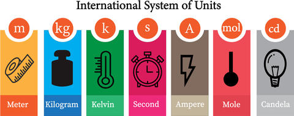
Measurement & Dimensions
Data Analysis for Psychology in R 3
Josiah King - josiah.king@ed.ac.uk
Psychology, PPLS
University of Edinburgh
Course Overview
|
Linear Mixed Models (with Elizabeth Pankratz) |
Regression refresher, intro to group-structured data |
| Modelling group-structured data using random effects | |
| Interpreting LMMs and building maximal models | |
| Troubleshooting model fit, checking assumptions + diagnostics | |
| LMMs: Practice analysis | |
|
Factor Analysis working with multi-item measures (with Josiah King) |
measurement and dimensionality |
| exploring underlying constructs (EFA) | |
| testing theoretical models (CFA) | |
| reliability and validity | |
| recap & exam prep |
Today
- measurement
- dimensions
- dimension reduction
This Week
Labs:
- some data wrangling with questionnaire data
- scale scores
- PCA
Lecture consolidation:
Refresher:
Looking ahead:
Warm up Activity
What is measurement?
Measurement
Thorndike’s Credo
“Whatever exists at all exists in some amount. To know it thoroughly involves knowing its quantity as well as its quality.”
(Edward L. Thorndike. 1918)
What is measurement?
“The process of assigning numbers to represent properties”
(Campbell, 1920)
“The assignment of numbers to objects or events according to rules”
(Stevens, 1947)
At the foundations of all scientific inquiry
Too often taken for granted
Key question: What do our numbers represent?
Quantifying the unquantifiable?
Many things are experienced qualitatively, as matters of degree, and are not easily amenable to direct quantification
We should always question whether our numbers truly represent a continuous quantity with homogeneous units
Measurement in Psychology
Many psychological phenomena cannot be observed directly:
- thoughts, feelings, behaviours etc.
Grounded in natural language that we discuss every day
- “aggression”, “intelligence”, “anxiety”
Definitions are often fuzzy and lack consensus
Result: Confusion and complexity in measurement, with scientific definitions often diverging from non-scientific definitions
What is a “construct”?
What
The thing we are intending to quantify
In psychology, education etc:
- a (hopefully useful) abstraction about the world, derived from natural observations
- often termed a “latent trait”
Why
Simplifies the world and provide a shared language for scientific study
Study the same phenomena across diverse contexts.
- e.g., what does “leadership” look like in hunter-gatherer societies, in the military and in the music industry?
Constructs, measures and data
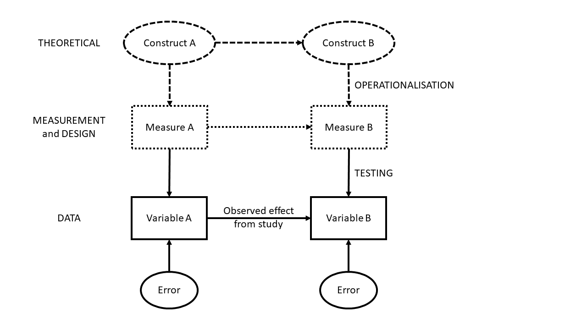
Constructs, measures and data
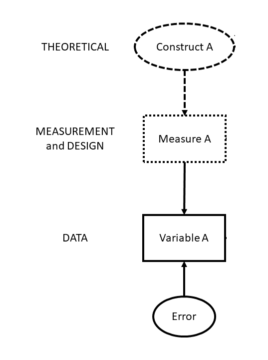
- “Engagement” - an unobservable psychological state. We cannot see “engagement” directly, we can only see observable consequences of having low/high engagement.
- Time Spent Looking at Lecture Recordings
- instrument: timestamps from Learn at “Play” and “Pause”/“Close”
- is watching at 2x speed count as full time, or half time? do we exclude anything <30 seconds?
student minutes_viewed
1 Student A 42
2 Student B 0
3 Student C 118
4 ... ...
5 ... ...Psychometrics
Scientific discipline concerned with the construction of psychological measurements
Connects theoretical constructs to their domains of observable behaviours
Education
- Aptitude / ability tests (i.e., standard school tests)
- Vocational tests
Business
- Selection (e.g., personality, skills)
- Development (e.g., interests, leadership)
- Performance (e.g., well-being, engagement)
Health
- Mental health symptoms e.g., anxiety
- Clinical diagnoses e.g., personality disorders
Key takeaway: People make life-changing decisions using psychometric evidence every day
Example
Changes in life satisfaction between journalling vs meditation…
# A tibble: 6 × 4
day condition ppt_id lifesat
<dbl> <chr> <chr> <dbl>
1 1 journal j1 36.6
2 2 journal j1 33.8
3 3 journal j1 44.2
4 4 journal j1 25.3
5 5 journal j1 42.4
6 6 journal j1 45.2Did anyone stop to think - What is
lifesat(i.e., life satisfaction)?is someone scoring 50 twice as “satisfied with life” as someone scoring 25?
Testing and measurement are two distinct activities
“When tests are automatically granted the status of measurement, they are that much more easily appropriated as vehicles for social injustice, even when this may well have been the opposite of the intent of the test designer.”
(Derek Briggs 2021)
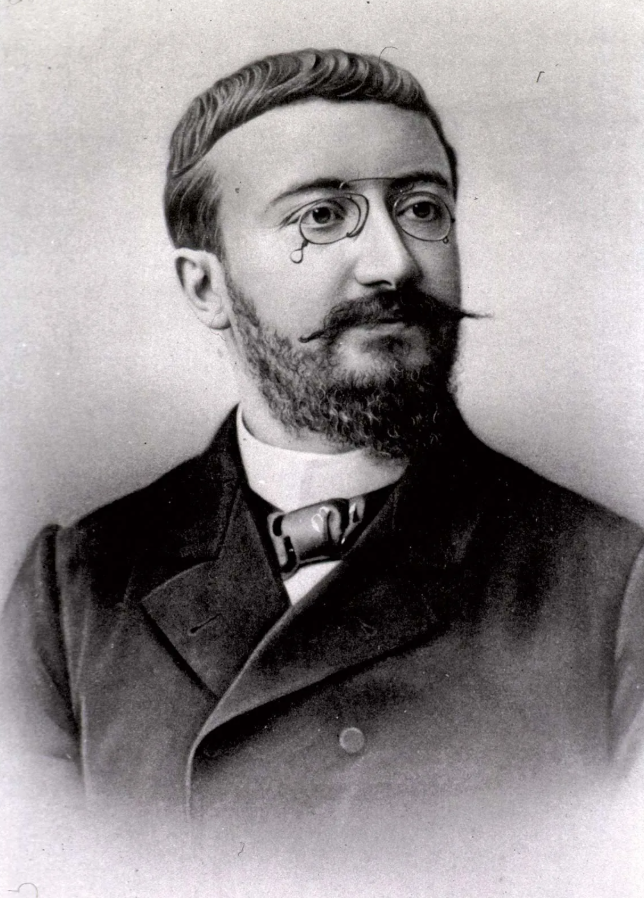
Binet’s purpose: diagnostic classification to be able to target educational interventions
adopted and implicitly taken as ‘measurement’ and used for group comparisons by advocates of eugenics in 20th century USA.
Testing and measurement are two distinct activities
| Concept | Definition | Scope | example |
|---|---|---|---|
| Measurement | Assigning numbers to numbers or events according to rules | Broad (theoretical/methodological) | Quantifying intelligence |
| Testing | Using a specific instrument/procedure to collect numbers | Narrow (practical/applied) | Administering WAIS to assess “IQ” |
When we confuse testing with measurement:
Risks reifying constructs that are partly socially defined (e.g., “intelligence”).
Enables justifying inequalities (“low scores mean low ability”) without examining bias, cultural context, or systemic barriers.
What do we need for “measurement”?
- substantive theory (or theories) about the attribute of interest;
- instrumentation designed to elicit variability in the attribute of interest;
- standardisation to ensure numeric results are trustworthy and invariant across different objects, instruments, and observers;
- mathematical analysis to map numeric values to the target attribute and quantify uncertainty.
What makes good measurement?
- Low Uncertainty: goal of measurement is to reduce our uncertainty about the value of the attribute we are targeting
- Invariance: a good ruler shouldn’t give different results because of who is holding it
- Homogeneous Units: a unit of change should convey the same amount regardless of where on the scale we are
Psychological measurement…
psychological constructs are complex, multifaceted, and abstract
a single question (or “item”) will…
- struggle to capture that complexity with any accuracy (high uncertainty).
- not necessarily have a “standard unit” such that the distance between points is equal (homogenous), or that those points mean the same thing to everyone (invariance).
- struggle to capture that complexity with any accuracy (high uncertainty).
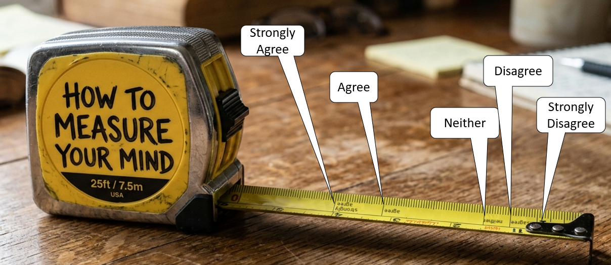
Multi-item measures
try to triangulate the “true” signal through shared variance between multiple items
each individual item is contaminated by noise specific to that item
in a collection of many different items, the specific noise (errors) from each individual item tends to cancel out
Example
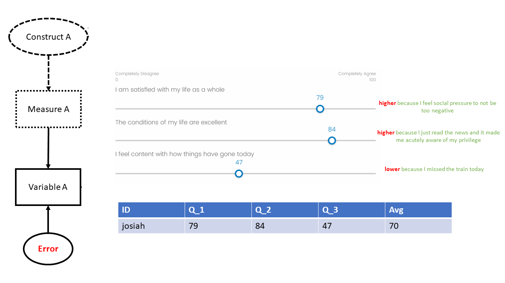
Looking ahead…
We will be studying mathematical models that map numeric scores on sets of items to the underlying construct.
This will serve various different goals we might have:
scoring: we might want to get one value for each person’s standing on the construct, e.g., for a subsequent analysis.
understanding: we might want to better understand what underlying construct(s) best explain the pattern of responses to a set of questions.
tests of measurement: testing theoretically pre-defined measurement of construct(s) in a confirmatory setting
assessing quality of measurement: quantifying the uncertainty in the measurement tool
An aside: Measurement in the modern world
1. Thorndike in the 21st Century…
Whatever exists at all exists in some amount. To know it thoroughly involves knowing the quality of how it has been quantified.
Data collection without theory is just digital hoarding
Storing 1 Terrabyte in the cloud for a year is ~10-40kg CO2 emissions (see digitaldecarb.org )
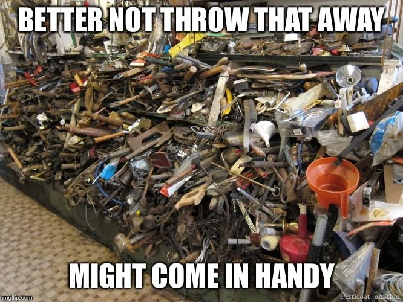
2. Impact of differences in perspectives
Different operationalisations make it difficult to consolidate findings:
- Jingle fallacy - Using same name to denote different things
- Jangle fallacy - Using different names to denote same thing
“Nobody wants to use somebody else’s toothbrush”
(Elson et al., 2023)
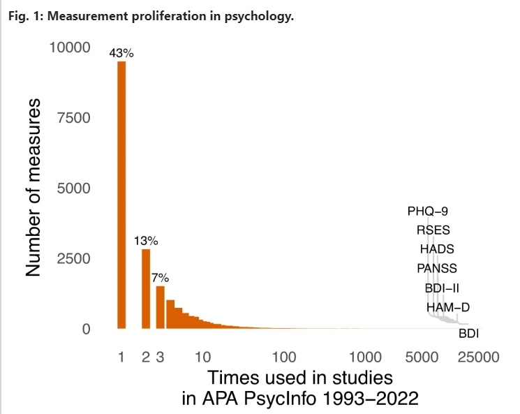
3. as always, more terminlogy
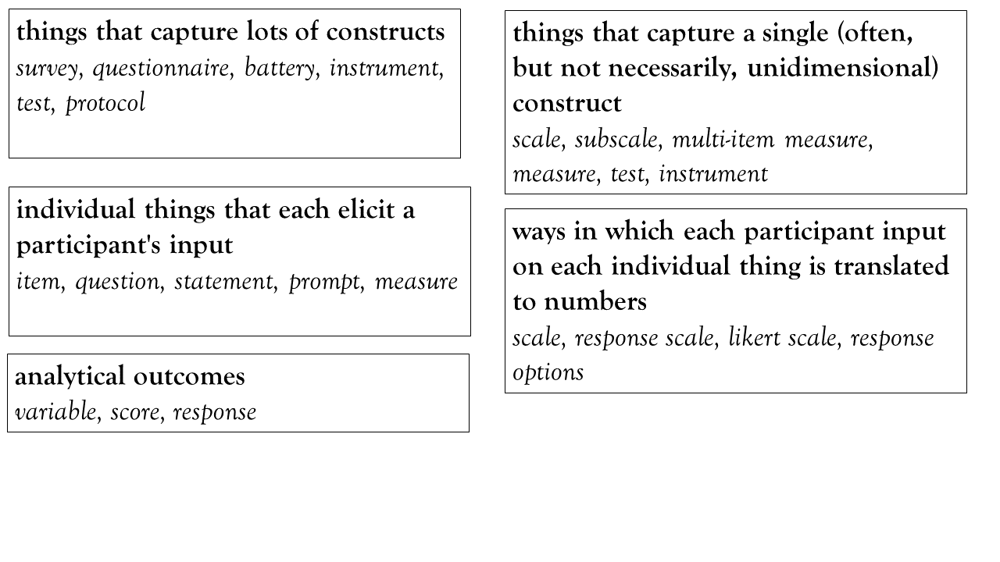
Dimensions
data (wide format)!
id RiskTake Q1 Q2 Q3
1 P001 20 40 50 20
2 P002 10 30 40 70
3 P003 28 77 72 56
4 P004 20 65 60 90
5 P005 7 57 56 39
. .... .. .. .. ..
. .... .. .. .. ..[1] 100 5| variable | description |
|---|---|
| id | Participant ID |
| RiskTake | The Balloon Analogue Risk Task (essentially - how far do you pump up a balloon) |
| Q1 | I am satisfied with my life as a whole |
| Q2 | The conditions of my life are excellent |
| Q3 | I feel content with how things have gone today |
initial thoughts?
Research Q: is life satisfaction associated with more/less risk taking?
Call:
lm(formula = RiskTake ~ Q1 + Q2 + Q3, data = lsatdat)
Residuals:
Min 1Q Median 3Q Max
-20.778 -6.313 0.774 7.453 16.868
Coefficients:
Estimate Std. Error t value Pr(>|t|)
(Intercept) 29.8885 3.5437 8.43 3.4e-13 ***
Q1 -0.0475 0.1096 -0.43 0.67
Q2 -0.1537 0.1025 -1.50 0.14
Q3 0.0501 0.0454 1.10 0.27
---
Signif. codes: 0 '***' 0.001 '**' 0.01 '*' 0.05 '.' 0.1 ' ' 1
Residual standard error: 9.6 on 96 degrees of freedom
Multiple R-squared: 0.0807, Adjusted R-squared: 0.0519
F-statistic: 2.81 on 3 and 96 DF, p-value: 0.0437a brief diversion (1)
- Area of circle represents variance of Y
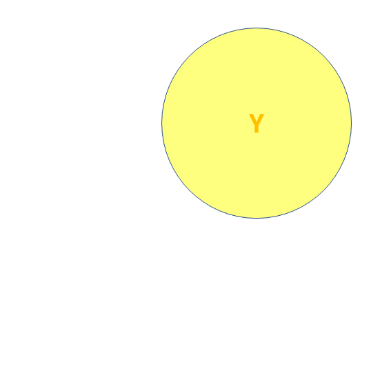
a brief diversion (2)
- X and Y are ‘orthogonal’ (perfectly uncorrelated)
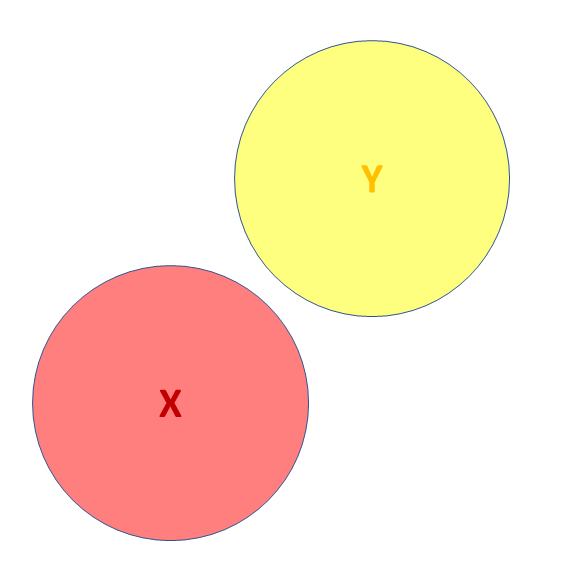
a brief diversion (3)
- X and Y are correlated.
- a = portion of Y’s variance shared with X
- e = portion of Y’s variance unrelated to X
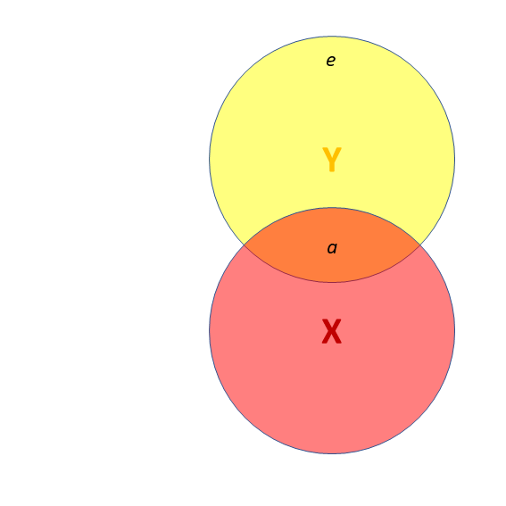
a brief diversion (4)
- X and Y are correlated.
- a = portion of Y’s variance shared with X
- e = portion of Y’s variance unrelated to X
- Z is also related to Y (c)
- Z is orthogonal to X (no overlap)
- relation between X and Y is unaffected (a)
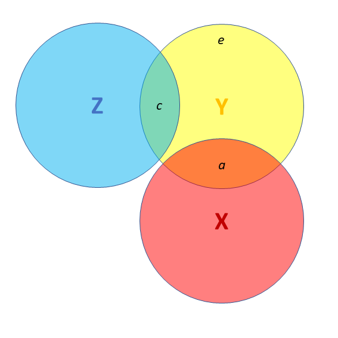
a brief diversion (5)
- X and Y are correlated.
- Z is also related to Y (c + b)
- Z is related to X (b + d)
Association between X and Y is changed if we adjust for Z (a is smaller than previous slide), because there is a bit (b) that could be attributed to Z instead.
- multiple regression coefficients for X and Z are like areas a and c
- total variance explained by both X and Z is a+b+c
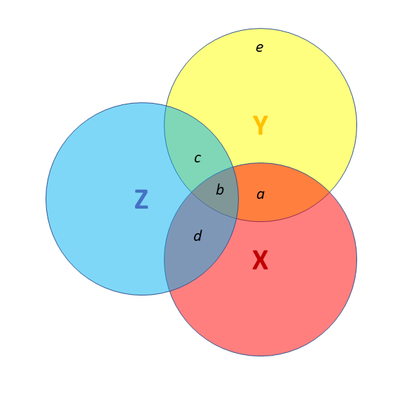
lm
Call:
lm(formula = RiskTake ~ Q1 + Q2 + Q3, data = lsatdat)
Residuals:
Min 1Q Median 3Q Max
-20.778 -6.313 0.774 7.453 16.868
Coefficients:
Estimate Std. Error t value Pr(>|t|)
(Intercept) 29.8885 3.5437 8.43 3.4e-13 ***
Q1 -0.0475 0.1096 -0.43 0.67
Q2 -0.1537 0.1025 -1.50 0.14
Q3 0.0501 0.0454 1.10 0.27
---
Signif. codes: 0 '***' 0.001 '**' 0.01 '*' 0.05 '.' 0.1 ' ' 1
Residual standard error: 9.6 on 96 degrees of freedom
Multiple R-squared: 0.0807, Adjusted R-squared: 0.0519
F-statistic: 2.81 on 3 and 96 DF, p-value: 0.0437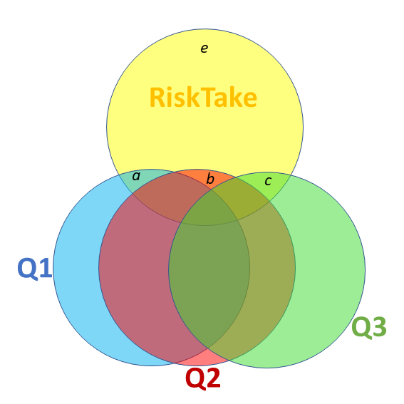
scale scores
creating scale scores - tidyverse
id RiskTake Q1 Q2 Q3 ScaleScore
1 P001 20 40 50 20 36.7
2 P002 10 30 40 70 46.7
3 P003 28 77 72 56 68.3
4 P004 20 65 60 90 71.7
5 P005 7 57 56 39 50.7
. .... .. .. .. .. ....
. .... .. .. .. .. ....| variable | description |
|---|---|
| id | Participant ID |
| RiskTake | The Balloon Analogue Risk Task (essentially - how far do you pump up a balloon) |
| Q1 | I am satisfied with my life as a whole |
| Q2 | The conditions of my life are excellent |
| Q3 | I feel content with how things have gone today |
| ScaleScore | Average of Scores on Q1, Q2 and Q3 |
lm with scale scores
Call:
lm(formula = RiskTake ~ ScaleScore, data = lsatdat)
Residuals:
Min 1Q Median 3Q Max
-20.52 -7.43 1.08 7.57 17.24
Coefficients:
Estimate Std. Error t value Pr(>|t|)
(Intercept) 28.5739 3.4853 8.20 9.5e-13 ***
ScaleScore -0.1178 0.0673 -1.75 0.083 .
---
Signif. codes: 0 '***' 0.001 '**' 0.01 '*' 0.05 '.' 0.1 ' ' 1
Residual standard error: 9.7 on 98 degrees of freedom
Multiple R-squared: 0.0303, Adjusted R-squared: 0.0204
F-statistic: 3.06 on 1 and 98 DF, p-value: 0.0834Activity break
should items have equal weights?
What things make people agree with each of these statements?
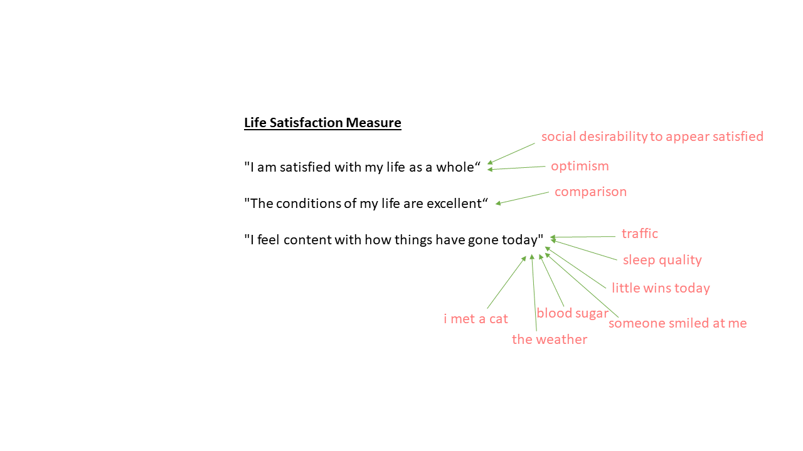
correlation matrix
in 3d
Three variables measuring the same thing but differently
Rate agreement on:
- Q1: I am satisfied with my life as a whole
- Q2: The conditions of my life are excellent
- Q3: I feel content with how things have gone today
Three variables measuring unrelated things:
Rate agreement on:
- Q1: I am the life and soul of the party
- Q2: I like penguins
- Q3: I enjoy studying statistics
Three variables perfectly measuring the exact same thing
Time spent looking at phone last week:
- In hours
- In days
- In weeks
in 3d - new axes
Three variables measuring the same thing but differently
Rate agreement on:
- Q1: I am satisfied with my life as a whole
- Q2: The conditions of my life are excellent
- Q3: I feel content with how things have gone today
Three variables measuring unrelated things:
Rate agreement on:
- Q1: I am the life and soul of the party
- Q2: I like penguins
- Q3: I enjoy studying statistics
Three variables perfectly measuring the exact same thing
Time spent looking at phone last week:
- In hours
- In days
- In weeks
how do we get at these axes?
Scale scores try, but they just cut through the middle, being pulled equally by every variable.
What about a weighted score? \(LifeSat = Q1 + Q2 + 0.5*Q3\)?
- How can we work out suitable weights?
- …
Principal Component Analysis (PCA)
In short:
re-express covariances/correlations between \(k\) measured variables as \(k\) new dimensions
dimensions are termed “components” and are orthogonal (perpendicular/uncorrelated)
dimensions sequentially capture most variance.
(green, then red, then blue, below)we then discard the components that don’t capture as much variation
eigendecomposition
In short:
- The math behind PCA
It’s a lot
We don’t need to understand it.

Some terms will come up…
- “eigenvector”
- direction of each dimension (relative to our original variables)
- which variables is the dimension related to?
- “eigenvalue”
- magnitude of each dimension
- how much variance is captured by the dimension?
PCA in R
principal()
can take a covariance matrix, a correlation matrix, or the raw data.
nfactors = 3
tells it to extract 3 dimensions (we have 3 observed variables, so we can extract up to 3 new dimensions)
rotate = "none"
saying that we want these dimensions to be orthogonal (in future weeks we’ll mix things up)
PCA in R
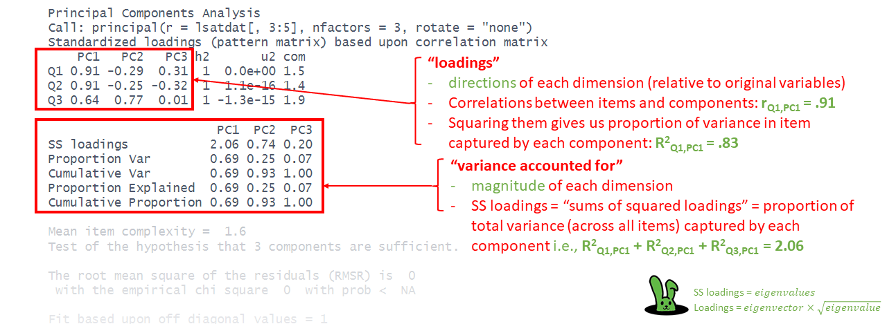
A bigger example
10 variables
# A tibble: 6 × 11
id Q1 Q2 Q3 Q4 Q5 Q6 Q7 Q8 Q9 Q10
<chr> <dbl> <dbl> <dbl> <dbl> <dbl> <dbl> <dbl> <dbl> <dbl> <dbl>
1 P001 40 50 20 51 15 0 35 1 27 42
2 P002 30 40 70 22 56 62 24 32 2 15
3 P003 77 72 56 71 67 43 63 32 65 75
4 P004 65 60 90 42 64 74 38 34 23 51
5 P005 57 56 39 46 23 33 54 8 35 31
6 P006 41 41 26 26 4 45 12 25 14 67| variable | description |
|---|---|
| id | Participant ID |
| Q1 | Overall, I am satisfied with my life. |
| Q2 | The conditions of my life are excellent. |
| Q3 | I feel content with how things have gone today. |
| Q4 | I am deeply happy with the way my life has turned out. |
| Q5 | I feel a sense of inner peace and satisfaction. |
| Q6 | I wake up most mornings feeling positive about the day ahead. |
| Q7 | I have gotten the important things I want in life. |
| Q8 | I experience joy and pleasure regularly in my daily life. |
| Q9 | My life has turned out better than I expected it would. |
| Q10 | If I could live my life over, I would change almost nothing. |
harder to see
Q1 Q2 Q3 Q4 Q5 Q6 Q7 Q8 Q9 Q10
Q1 1.00 0.80 0.36 0.45 0.41 0.25 0.41 0.13 0.36 0.59
Q2 0.80 1.00 0.38 0.38 0.47 0.25 0.34 0.08 0.38 0.51
Q3 0.36 0.38 1.00 0.55 0.85 0.73 0.11 0.54 0.17 0.25
Q4 0.45 0.38 0.55 1.00 0.49 0.41 0.21 0.37 0.35 0.33
Q5 0.41 0.47 0.85 0.49 1.00 0.62 0.15 0.44 0.20 0.31
Q6 0.25 0.25 0.73 0.41 0.62 1.00 -0.07 0.51 0.09 0.27
Q7 0.41 0.34 0.11 0.21 0.15 -0.07 1.00 0.05 0.19 0.14
Q8 0.13 0.08 0.54 0.37 0.44 0.51 0.05 1.00 0.06 0.16
Q9 0.36 0.38 0.17 0.35 0.20 0.09 0.19 0.06 1.00 0.16
Q10 0.59 0.51 0.25 0.33 0.31 0.27 0.14 0.16 0.16 1.00
harder to see?
PCA
Principal Components Analysis
Call: principal(r = lsat10[, 2:11], nfactors = 10, rotate = "none")
Standardized loadings (pattern matrix) based upon correlation matrix
PC1 PC2 PC3 PC4 PC5 PC6 PC7 PC8 PC9 PC10 h2 u2 com
Q1 0.73 0.53 -0.17 0.05 -0.01 0.03 -0.19 0.16 -0.30 0.04 1 1.1e-16 2.7
Q2 0.72 0.50 -0.17 -0.02 -0.22 0.09 -0.27 0.05 0.27 -0.04 1 -1.8e-15 2.9
Q3 0.82 -0.43 0.07 0.06 -0.22 -0.03 0.04 -0.09 -0.08 -0.27 1 2.8e-15 2.0
Q4 0.72 -0.03 0.25 -0.14 0.27 -0.56 -0.08 0.03 0.05 0.03 1 1.8e-15 2.7
Q5 0.81 -0.29 0.01 0.07 -0.33 0.00 0.03 -0.31 -0.02 0.20 1 1.9e-15 2.1
Q6 0.68 -0.52 -0.14 -0.06 -0.09 0.07 0.23 0.41 0.05 0.07 1 1.3e-15 3.1
Q7 0.32 0.50 0.42 0.64 0.03 0.03 0.22 0.04 0.04 0.00 1 2.2e-16 3.6
Q8 0.52 -0.53 0.15 0.17 0.48 0.32 -0.24 -0.04 0.02 0.02 1 1.4e-15 4.5
Q9 0.41 0.37 0.51 -0.59 0.04 0.25 0.15 -0.03 -0.01 0.00 1 7.8e-16 4.1
Q10 0.58 0.31 -0.57 -0.05 0.36 0.02 0.29 -0.18 0.03 -0.03 1 -4.4e-16 4.0
PC1 PC2 PC3 PC4 PC5 PC6 PC7 PC8 PC9 PC10
SS loadings 4.24 1.83 0.93 0.83 0.65 0.50 0.38 0.34 0.18 0.12
Proportion Var 0.42 0.18 0.09 0.08 0.07 0.05 0.04 0.03 0.02 0.01
Cumulative Var 0.42 0.61 0.70 0.78 0.85 0.90 0.94 0.97 0.99 1.00
Proportion Explained 0.42 0.18 0.09 0.08 0.07 0.05 0.04 0.03 0.02 0.01
Cumulative Proportion 0.42 0.61 0.70 0.78 0.85 0.90 0.94 0.97 0.99 1.00
Mean item complexity = 3.2
Test of the hypothesis that 10 components are sufficient.
The root mean square of the residuals (RMSR) is 0
with the empirical chi square 0 with prob < NA
Fit based upon off diagonal values = 1how many of the dimensions do we keep?
how many do you want?
how many look to be relevant/important?
variance accounted for
PC1 PC2 PC3 PC4 PC5 PC6 PC7 PC8 PC9 PC10
SS loadings 4.24 1.83 0.927 0.832 0.654 0.50 0.383 0.339 0.176 0.121
Proportion Var 0.42 0.18 0.093 0.083 0.065 0.05 0.038 0.034 0.018 0.012
Cumulative Var 0.42 0.61 0.699 0.783 0.848 0.90 0.936 0.970 0.988 1.000
Proportion Explained 0.42 0.18 0.093 0.083 0.065 0.05 0.038 0.034 0.018 0.012
Cumulative Proportion 0.42 0.61 0.699 0.783 0.848 0.90 0.936 0.970 0.988 1.000screeplots
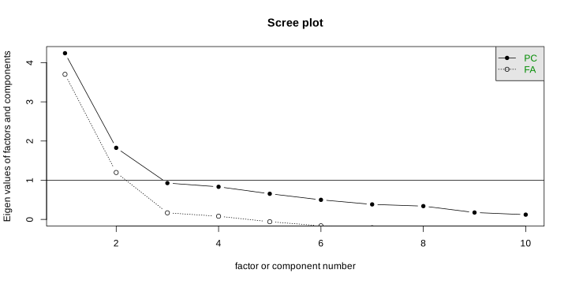
how many of the dimensions do we keep?
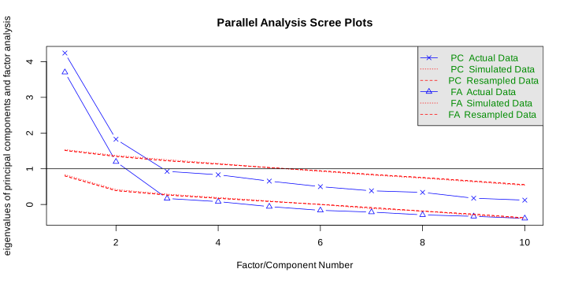
Parallel analysis suggests that the number of factors = 2 and the number of components = 2
Very Simple Structure
Call: vss(x = x, n = n, rotate = rotate, diagonal = diagonal, fm = fm,
n.obs = n.obs, plot = plot, title = title, use = use, cor = cor)
VSS complexity 1 achieves a maximimum of 0.75 with 1 factors
VSS complexity 2 achieves a maximimum of 0.88 with 2 factors
The Velicer MAP achieves a minimum of 0.05 with 2 factors
BIC achieves a minimum of -82 with 2 factors
Sample Size adjusted BIC achieves a minimum of -6 with 4 factors
Statistics by number of factors
vss1 vss2 map dof chisq prob sqresid fit RMSEA BIC SABIC complex
1 0.74 0.00 0.096 35 2.1e+02 2.2e-26 6.2 0.74 0.222 46 156.87 1.0
2 0.72 0.87 0.048 26 3.8e+01 6.3e-02 3.1 0.87 0.067 -82 0.17 1.6
3 0.73 0.87 0.071 18 2.4e+01 1.5e-01 2.5 0.89 0.058 -59 -1.79 1.9
4 0.73 0.88 0.112 11 9.9e+00 5.4e-01 2.1 0.91 0.000 -41 -6.02 2.1
5 0.73 0.83 0.148 5 3.3e+00 6.6e-01 1.3 0.95 0.000 -20 -3.97 2.1
6 0.75 0.85 0.289 0 2.0e-02 NA 1.1 0.95 NA NA NA 2.4
7 0.73 0.85 0.352 -4 6.4e-07 NA 1.4 0.94 NA NA NA 2.6
8 0.73 0.85 0.504 -7 3.6e-10 NA 1.4 0.94 NA NA NA 2.6
eChisq SRMR eCRMS eBIC
1 9.4e+01 1.0e-01 0.116 -67
2 8.7e+00 3.1e-02 0.041 -111
3 4.6e+00 2.3e-02 0.036 -78
4 1.6e+00 1.3e-02 0.027 -49
5 1.6e-01 4.3e-03 0.013 -23
6 1.6e-03 4.3e-04 NA NA
7 4.2e-08 2.2e-06 NA NA
8 1.6e-11 4.2e-08 NA NAUsing PCA in context
back to our 3-item example
id RiskTake Q1 Q2 Q3 ScaleScore
1 P001 20 40 50 20 36.7
2 P002 10 30 40 70 46.7
3 P003 28 77 72 56 68.3
4 P004 20 65 60 90 71.7
5 P005 7 57 56 39 50.7
. .... .. .. .. .. ....
. .... .. .. .. .. ....| variable | description |
|---|---|
| id | Participant ID |
| RiskTake | The Balloon Analogue Risk Task (essentially - how far do you pump up a balloon) |
| Q1 | I am satisfied with my life as a whole |
| Q2 | The conditions of my life are excellent |
| Q3 | I feel content with how things have gone today |
| ScaleScore | Average of Scores on Q1, Q2 and Q3 |
PCA scores
Principal Components Analysis
Call: principal(r = lsatdat[, 3:5], nfactors = 1, rotate = "none")
Standardized loadings (pattern matrix) based upon correlation matrix
PC1 h2 u2 com
Q1 0.91 0.82 0.18 1
Q2 0.91 0.84 0.16 1
Q3 0.64 0.40 0.60 1
PC1
SS loadings 2.06
Proportion Var 0.69
Mean item complexity = 1
Test of the hypothesis that 1 component is sufficient.
The root mean square of the residuals (RMSR) is 0.12
with the empirical chi square 8.8 with prob < NA
Fit based upon off diagonal values = 0.95 id RiskTake Q1 Q2 Q3 ScaleScore PC1
1 P001 20 40 50 20 36.7 -0.65
2 P002 10 30 40 70 46.7 -0.56
3 P003 28 77 72 56 68.3 1.55
4 P004 20 65 60 90 71.7 1.31
5 P005 7 57 56 39 50.7 0.28
. .... .. .. .. .. .... ...
. .... .. .. .. .. .... ...\[ = \frac{0.91}{\lambda} \cdot Z(Q1) + \frac{0.91}{\lambda} \cdot Z(Q2) + \frac{0.64}{\lambda} \cdot Z(Q3) \]
- \(Z()\) here is standardisation - \(Z(x) = \frac{x - \bar x}{sd_x}\), because we are doing PCA on correlations
- \(\lambda\) is the eigenvalue/SS loading, to just make sure that scores on each component are standardised.
reminder: lm with scale scores
The noise from Q3 makes things difficult to see!
Call:
lm(formula = RiskTake ~ ScaleScore, data = lsatdat)
Residuals:
Min 1Q Median 3Q Max
-20.52 -7.43 1.08 7.57 17.24
Coefficients:
Estimate Std. Error t value Pr(>|t|)
(Intercept) 28.5739 3.4853 8.20 9.5e-13 ***
ScaleScore -0.1178 0.0673 -1.75 0.083 .
---
Signif. codes: 0 '***' 0.001 '**' 0.01 '*' 0.05 '.' 0.1 ' ' 1
Residual standard error: 9.7 on 98 degrees of freedom
Multiple R-squared: 0.0303, Adjusted R-squared: 0.0204
F-statistic: 3.06 on 1 and 98 DF, p-value: 0.0834lm with PC scores
downweighting Q3 means that the variance in that variable contributes less to the score!
Call:
lm(formula = RiskTake ~ PC1, data = lsatdat)
Residuals:
Min 1Q Median 3Q Max
-20.03 -7.42 1.31 7.40 17.39
Coefficients:
Estimate Std. Error t value Pr(>|t|)
(Intercept) 22.720 0.966 23.5 <2e-16 ***
PC1 -2.137 0.971 -2.2 0.03 *
---
Signif. codes: 0 '***' 0.001 '**' 0.01 '*' 0.05 '.' 0.1 ' ' 1
Residual standard error: 9.7 on 98 degrees of freedom
Multiple R-squared: 0.0471, Adjusted R-squared: 0.0374
F-statistic: 4.85 on 1 and 98 DF, p-value: 0.0301Extra
fun little challenge
i have measured 98 different boxes from a “well known online retailer”
i have measured 11 attributes: length, width, height, volume (cubic inches), area of face 1, area of face 2, area of face 3, total area of all outer faces, diagonal of face 1, diagonal of face 2, diagonal of face 3
amazon_box_size length width height area_f1 area_f2 area_f3 diag_f1 diag_f2
11 1A7 (B47,BF7) 14 8 7.2 116 105 58 17 16
64 N3 15 11 5.0 165 75 55 19 16
79 Q4 20 37 3.0 740 60 111 42 20
63 K89 44 10 10.0 445 445 100 46 46
85 U0 (BSG) 40 12 9.2 480 370 111 42 41
77 Q2 34 22 13.5 748 459 297 40 37
diag_f3 tot_surf tot_vol
11 11 558 841
64 12 590 825
79 37 1822 2220
63 14 1980 4450
85 15 1922 4440
77 26 3008 10098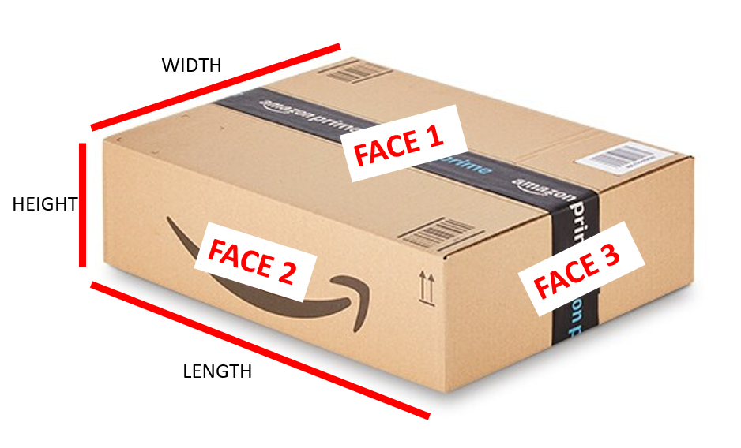
fun little challenge
What value is ???
...
...
PC1 PC2 PC3 PC4 PC5 PC6 PC7 ... ...
SS loadings --- --- --- ... ... ... ...
Proportion Var --- --- --- ... ... ...
Cumulative Var --- --- --- ... ...
Proportion Explained --- --- --- ... ...
Cumulative Proportion --- --- ???